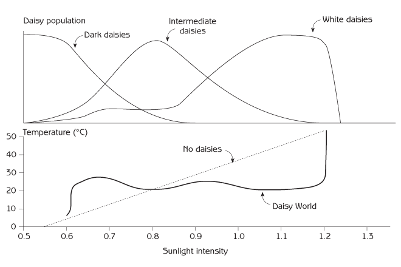
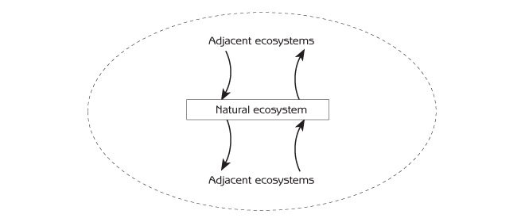
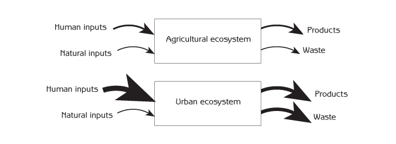
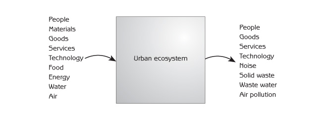
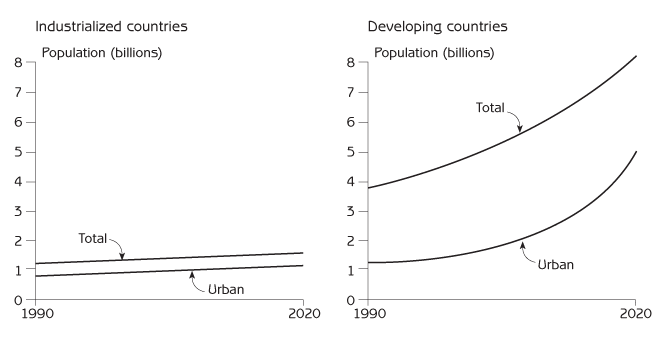
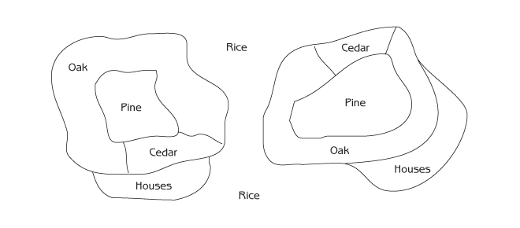
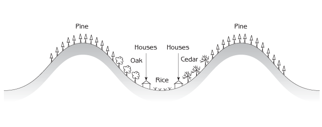
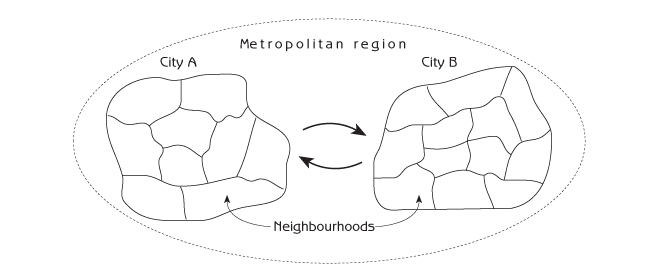

Human Ecology
Basic Concepts for Sustainable Development
Author: Gerald G. Marten
Publisher: Earthscan Publications
Publication Date: November 2001, 256 pp.
Paperback ISBN: 1853837148
Hardback ISBN: 185383713X
← View the full Table of Contents.
Chapter 5 Ecosystem Organization
- Coadaptation
- Ecosystem design
- Ecosystem homeostasis
- Comparison of natural, agricultural and urban ecosystems
- Landscape mosaics
- Things to think about
Self-organizing processes in ecosystems make them awesomely complex. The organizing processes are a mixture of randomness and ordered selectivity. The resultant complexity is highly functional for ecosystem survival.
The plants, animals and microorganisms in an ecosystem are organized as a food web in which they all fit together functionally. There are two main reasons that they fit together:
- The community assembly process is able to select from a pool of species with the potential to fit together because species that have lived together in the same ecosystem for thousands of years have coadapted to each other through biological evolution.
- As the community assembly process forms a food web, it selects only species that fit into the existing web. (This is the island story in Chapter 4.)
This chapter starts by enumerating some of the ways that the living components of ecosystems are coadapted to one another. It then explains nature’s design of ecosystems - how everything fits together to form an ongoing and functionally integrated whole - and goes on to describe three major kinds of ecosystems and how they differ with respect to ecosystem inputs and ecosystem outputs:
- Natural ecosystems.
- Agricultural ecosystems.
- Urban ecosystems.
In addition to having their biological communities organized as food webs, ecosystems are organized across landscapes as a hierarchical patchwork of smaller ecosystems - a landscape mosaic. This chapter will conclude by describing how the patchwork of biological communities in a landscape mosaic is associated with the underlying patchwork of topography and physical conditions in the same landscape - and how the patches connect together through inputs and outputs to form the landscape mosaic as a functional whole.
Coadaptation
Coadaptation and coevolution are emergent properties of ecosystems. Coadaptation (fitting together) is a consequence of coevolution (changing together). While adaptation can take any form that enhances survival, the most conspicuous forms of coadaptation are associated with the ways in which animals and microorganisms obtain nutrition from other living organisms in the food web. On the one hand, animals are adapted to finding and eating the particular plants or animals that they use as food. On the other hand, they have the ability to hide or flee from animals that use them as food, and they can develop immunity against parasites and pathogens that use them as food. Coadaptation between predator and prey is an evolutionary game that never ends. Predators evolve more effective ways to capture their prey, and the prey respond by evolving ways to avoid capture. Cats evolve sensitive hearing to detect mice in the dark, and mice evolve the ability to move quietly so that cats will not hear them.
Plants cannot run or hide, but they have evolved other ways to avoid being eaten. Many plants have such low nutritional value that they are not worth consuming. Some species of plants contain chemicals that interfere with digestion by animals; other species are poisonous or are protected by defences such as thorns. Some species of animals overcome this problem by specialising in eating one particular kind of plant after evolving the ability to neutralize the poison or other defence of that plant species. This game of coadaptation gives every plant and animal species in the ecosystem the ability to obtain the food it requires for survival. It also endows every species with the ability to survive despite being consumed by other animals that use it as food. Coexistence is built into the game. It is typical for pathogens and parasites to evolve the ability to live in their hosts without killing them, a strategy that ensures a more continuous food supply.
Completely cooperative relationships - symbiosis - are also common. Some species of acacia trees have special structures that provide food and microhabitats for ants that protect the trees from insects that eat their leaves. Nitrogen-fixing bacteria live in the roots of plants such as legumes. The bacteria convert atmospheric nitrogen to a form that plants can use, and the plants provide nutrition for the bacteria. Similar cooperation exists with fungi (mycorrhizae) that assist plant roots to take up phosphorous from the soil. The mycorrhizae receive nutrition from the plants. Honey bees distribute pollen that fertilizes flowers while they collect pollen and nectar as food. Nature contains thousands of symbiotic relationships such as these. The consequence of coadaptation is a group of plants, animals and microorganisms from which the community assembly process can form viable ecosystems.
Ecosystem Design
Coadaptation and community assembly are the source of nature’s design for ecosystems, a design that can be summarized by comparing ecosystems to another kind of system - a television set. Ecosystems and television sets are similar in some ways because both are systems; they are different in other ways because ecosystems are designed by nature and television sets are designed by people for a very specific purpose. One of the main ways in which ecosystems and television sets are similar is that they both have a selection of parts that function together. A television has a large number of electronic components, each precisely suited to the other components in the set. A television set would not work if its electronic components were selected and connected to one another at random. There would certainly be no picture, and the television would probably blow up when plugged in. Ecosystems also have a selection of components which are able to fit together precisely because they are coadapted by biological evolution. The component species in an ecosystem survive because they fit together in a way that enables the whole ecosystem to provide the necessary resources for each species. This happens through ecosystem processes such as material cycling and energy flow, which are explained in Chapter 8.
Television sets and ecosystems derive their whole system behaviour from the fact that the behaviour of each system component is limited by the actions of other components. Although every electronic component in a television set could theoretically have a wide range of electric currents, the current at each component depends upon currents that come from other components. As a result, electric currents throughout the television set are constrained by its design to orderly patterns that generate a picture. The picture is an emergent property of the television set.
The same kinds of limitation apply to ecosystems. Although all the plants, animals and microorganisms have the reproductive capacity to multiply to enormous numbers, their populations are constrained by food supply, natural enemies and other ecological forces. Uncontrolled populations could damage other parts of the ecosystem, destroying themselves and the system. The ecosystem ensures its survival by feedback mechanisms that regulate the biological populations within it.
There are, however, some important differences between ecosystems and television sets. Ecosystems have a higher level of redundancy (duplication) than television sets, and this gives them greater reliability and resilience (see Chapter 11 for a detailed discussion of resilience). Because television sets are designed to be constructed as economically as possible, there is only one component for every function. If a component is removed, a television set ceases to function. In the case of ecosystems, there is considerable duplication of function among different organisms. Each important function in an ecosystem is normally performed by several different species - sometimes by dozens of species.
Ecosystems and television sets are different in another important way. The biological components of ecosystems are themselves complex adaptive systems with the ability to change as circumstance demands. Once a television set is put together, each component has the same operating characteristics regardless of what happens in the rest of the circuit. And once soldered into place, no component can change its connection with the other components. Ecosystems are very different because, depending upon what is happening at a particular time, plants and animals can change the way in which they interact with other species. For example, animals with the ability to eat several different kinds of food can switch from one food source to another whenever one becomes scarce and another becomes abundant.
Ecosystem Homeostasis
Population regulation keeps every population in an ecosystem’s biological community within limits that are imposed by the functioning of the ecosystem as a whole. The carrying capacity for each species of plant, animal and microorganism depends upon what happens in other parts of the ecosystem. Ecosystems also keep their physical conditions within limits. For example, biological and physical processes regulate the quantity of water in the soil. Plants function best when there is neither too much nor too little water. Too much water can push out air needed by microorganisms and plant roots; too little water restricts plant growth. If there is too much water in the soil after heavy rain, plants consume large quantities, and excess water percolates downward through the soil. If there is too little water during periods of lesser rainfall, plants reduce their water consumption, and clay and soil organic matter store water for use by plants and soil microorganisms.
Ecosystem homeostasis is not as exacting as the homeostasis of individual organisms, but it is quite real - particularly in natural ecosystems and the natural part of agricultural and urban ecosystems. Random factors such as weather fluctuations can cause small changes in an ecosystem’s biological community and physical environment from one year to the next. But as long as the ecosystem is not drastically altered by a severe outside disturbance, ecosystem homeostasis keeps the biological community and physical environment within functional bounds. If something detrimental happens to one particular species in an ecosystem, other species with the same function increase in abundance and the function continues. Ecosystem state may fluctuate with the passage of time, but it usually remains within the stability domain appropriate for that kind of ecosystem. It is not necessary to ascribe ‘consciousness’ or ‘purpose’ to the impressive effectiveness with which hundreds of negative feedback loops keep everything in ecosystems within the limits necessary for all to function together. Ecosystems organize themselves through coadaptation and community assembly in such a way that the ecosystem as a whole continues to function on a sustainable basis.
The Gaia hypothesis expresses the concept of ecosystem homeostasis for the global ecosystem of planet Earth. Gaia is the name of the Greek goddess Mother Earth. The Gaia hypothesis states that ‘Life on Earth maintains the Earth’s climate and atmospheric composition at an optimum for life’. For example, the carbon cycle maintains atmospheric oxygen and carbon dioxide at concentrations required by the plants and animals in the global ecosystem. This is accomplished by a variety of processes including photosynthesis, respiration and the carbonic acid - bicarbonate - carbonate buffer system in the ocean. Global ecosystem homeostasis is a consequence of homeostasis in the large number of local but mutually interacting ecosystems on the planet.
An imaginary planet called Daisy World illustrates the basic idea of the Gaia hypothesis. It shows how vegetation can contribute to regulating the Earth’s temperature by adjusting the Earth’s reflection and absorption of sunlight (‘albedo’). Daisy World has three kinds of flowers. One flower is white, the second is intermediate coloured (grey) and the third is dark. Dark flowers absorb most of the sunlight that comes to them, converting the sunlight to heat, so dark flowers heat Daisy World the most. White flowers reflect most of the sunlight, so they heat Daisy World the least. Dark flowers survive best at cooler temperatures, white flowers survive best at warmer temperatures and intermediate-coloured flowers survive best at intermediate temperatures.
The temperature of Daisy World is regulated by a negative feedback loop that changes the numbers of light and dark coloured flowers. If sunlight increases and the temperature starts to go up, it becomes too warm for dark flowers to survive and some are replaced by lighter flowers (see the top panel of Figure 5.1). Because the lighter flowers absorb less sunlight, the temperature goes down. If sunlight intensity decreases and the temperature goes down too far, it becomes too cold for white flowers to survive, and some of the white flowers are replaced by darker flowers. Because darker flowers absorb more sunlight, the temperature goes up.

The solid line in the bottom panel of Figure 5.1 shows the temperature of Daisy World at different sunlight intensities. Over a wide range of sunlight intensity (from 0.6 - 1.2), the temperature in Daisy World stays around 22.5° Celsius, which is the optimum (ie, best) temperature for flowers. The dashed line in the bottom panel shows what happens in a world without different coloured daisies, where temperature has a straight line relationship with sunlight intensity (ie, there is no temperature regulation).
Comparisono Natural, Agricultural and Urban Ecosystems
It is useful to distinguish three major kinds of ecosystems. Natural ecosystems organize themselves. Their outputs for human use include renewable natural resources such as wood, fish and water. Agricultural and urban ecosystems are organized in part by human inputs of materials, energy and information. The rest of their organization comes from the same self-organizing processes that form natural ecosystems. Agricultural ecosystems provide outputs of food, fibre or other renewable resources. Urban ecosystems provide human habitation and industrial outputs. Agricultural and urban ecosystems that differ more from natural ecosystems require more intensive human inputs to make them and keep them that way.
The following descriptions are generalized for each major type of ecosystem. Some ecosystems, depending upon the spatial scale, are a combination of two or even three of the major types.
Natural ecosystems
Natural processes are entirely responsible for structuring natural ecosystems, which contain only wild plants and animals. Their biological communities are formed entirely by coevolution, coadaptation and community assembly. Natural ecosystems are self-organizing, self-sufficient and self-sustaining. They survive with only natural inputs such as sunlight and water. Most inputs and outputs of natural ecosystems are exchanges with adjacent ecosystems when materials which also contain energy and information are transported by wind, water, gravity or animals (see Figure 5.2). Inputs and outputs are small because most natural ecosystems have evolved numerous mechanisms for holding onto materials. For example, natural ecosystems prevent soil loss due to rain or wind erosion by covering the soil with grass or leaves. Where soils have a low natural fertility, ecosystems keep mineral nutrients for plants inside the ecosystem by holding minerals in the bodies of plants, animals and microorganisms.

Agricultural ecosystems
Agricultural ecosystems are farm ecosystems. They use domesticated plants or animals to produce food, fibre or fuel for human consumption. The island in the community assembly story in Chapter 4 was an agricultural ecosystem because it had sheep. Agricultural ecosystems are a combination of design by people and design by nature. People provide crops or livestock, and nature supplies wild plants and animals through the usual process of community assembly. Many of the wild plants and animals are essential for the agricultural functioning of these ecosystems. Earthworms and other soil animals maintain soil fertility by breaking dead plant and animal materials into small pieces that expose them to decomposition by bacteria. Bacteria consume dead plants and animals, moving the minerals in their bodies into the soil in a form that plants can use as nutrients. Other plants and animals compete with people for the consumption of an agricultural ecosystem’s production and are often regarded as weeds or pests to be excluded from the ecosystem if possible. In addition to living plants and animals, agricultural ecosystems contain non-living things made by people such as irrigation ditches and farm equipment. Agricultural ecosystems are not self-sustaining. They require human inputs to make them different from natural ecosystems in ways that farmers desire (see Figure 5.3).

Some agricultural ecosystems differ greatly from natural ecosystems; others do not. Pasture ecosystems with grazing animals such as sheep or cattle usually require less human inputs than crop ecosystems because pasture is more like a natural ecosystem. Modern agricultural ecosystems need the most inputs - farm machinery, chemical fertilizers, pesticides and irrigation - because they differ the most from natural ecosystems. Intensive inputs increase the conversion of sunlight energy to human food energy in two important ways:
- They provide favourable conditions for crop growth, such as ample water and mineral nutrients.
- They exclude plants and animals that compete with people for the ecosystem’s biological production.
Intensive inputs to modern agricultural ecosystems depend heavily upon petroleum. Large quantities of petroleum energy are required to manufacture fertilizers and pesticides, transport these agricultural chemicals to the farm and apply them on the field. Petroleum is the source of materials and energy for manufacturing plastics that cover the ground to prevent evaporative water loss. It is the source of energy for manufacturing and operating farm machinery, pumping irrigation water and transporting the harvest to distant markets. Because it is typical to use ten calories of petroleum energy for every calorie of food production, modern agricultural ecosystems do not simply convert sun energy to food energy. They also convert petroleum energy to food energy. In effect, people are ‘eating’ petroleum.
Water is another intensive input, agricultural use competing with supplies for natural and urban ecosystems. Modern irrigation often requires large amounts of water, sometimes from sources hundreds of kilometres away. Conflicts over water will become an increasing part of the world scene.
The payoff from high inputs is high outputs - high levels of crop or animal production. However, intended products are not the only outputs of modern agricultural ecosystems. Wastes that can damage nearby ecosystems are other outputs. Fertilizers and pesticides carried out of agricultural ecosystems as runoff from fields can pollute streams, rivers and groundwater in the surrounding region.
Traditional agricultural ecosystems comprise the type of agriculture that people engaged in before modern technology. Traditional agriculture was developed over many centuries by a cultural assembly process of trial and error. Many parts of the developing world that have not yet been modernized still rely on traditional agriculture. Many traditional agricultural ecosystems are similar to natural ecosystems because traditional farmers have designed their agricultural ecosystems to take advantage of natural processes instead of fighting nature. For example, it is common for traditional agriculture to have a mixture of many crops in the same field, just as natural ecosystems have a mixture of different plant species. This style of agriculture is called ‘mixed cropping’ or polyculture. Traditional agriculture requires less inputs than modern agriculture, so it is more self-sustaining. Traditional agriculture also has less outputs than modern agriculture - less crop production and less pollution. Modern organic farming, which strives to be in harmony with nature while providing food that is free of toxic chemicals, is similar to traditional agriculture.
Urban ecosystems
Cities are urban ecosystems. They are organized almost entirely by people. They are usually dominated by human-made structures such as buildings and streets. Many of the plants and animals in urban ecosystems are domesticated, such as garden plants and pets, but there are also wild plants and animals, such as weeds, birds and rats. Urban ecosystems are not self-sustaining. Urban ecosystems require large quantities of inputs and produce substantial outputs in the form of wastes (see Figures 5.3 and 5.4).

Cities are the basis of human civilization. The first cities appeared about 6000 years ago. Although half of the world’s human population now lives in cities, most people in the past lived in smaller and simpler urban ecosystems such as villages. The growth of cities accelerated greatly after the Industrial Revolution, but the predominance of cities that we know today is even more recent. Only 14 per cent of the human population lived in cities at the beginning of the 20th century. Now, 75 per cent of people in industrialized nations live in cities. Although only 35 per cent of the developing world population lives in cities today, the actual number of people in developing world cities is already greater than the number in the cities of industrialized nations.
The urban population of industrialized nations is now increasing very slowly, but developing world cities continue to grow at a rapid rate (see Figure 5.5). Within 25 years, developing world cities will have three times as many people as the cities of industrialized nations. Many developing world cities are growing so fast that they cannot provide basic services such as water, waste collection, electricity, education and basic health services to a significant percentage of their population.

Landscape Mosaics
Every landscape is a patchwork of different sites with different biological communities and therefore different ecosystems. This happens because:
- Different sites have different physical conditions. These distinct conditions may be partly a consequence of natural variation in the landscape and partly a consequence of human activities.
- The community assembly process produces different biological communities where physical conditions are different.
- People make agricultural and urban ecosystems where conditions are suitable.
This patchwork is a landscape mosaic. It is an emergent property of ecosystems.
Figure 5.6 shows a typical landscape mosaic in the Kansai region of western Japan. The same kinds of ecosystems are repeated across the landscape. This happens because similar physical conditions are repeated in different parts of the landscape. Sites with similar physical conditions can have biological communities that are nearly the same. They therefore have similar ecosystems. People make similar agricultural or urban ecosystems where conditions are similar.

A particular kind of ecosystem is a grouping of similar ecosystems that are given the same name based on the most abundant and conspicuous plants in the biological community. The common forest ecosystems in western Japan are:
- pine (matsu);
- oak (donguri);
- Japanese cedar (sugi);
- Japanese cypress (hinoki).
Pine and oak forests occur naturally. Pine forests are common on the upper parts of hills where the soil is shallow due to soil erosion because soil is generally moved by rainwater from hilltops and hillsides to the valleys below (see Figure 5.7). Oak forests are common around the lower parts of hills, where the soil is deeper. Cedar and cypress forests may look superficially like natural ecosystems, but they are agricultural ecosystems planted by people to provide high-quality timber for construction. People plant cedar and cypress in orderly rows near the bottom of hills, where deeper soil holds a greater quantity of moisture and plant nutrients to support rapid tree growth. Japan has other agricultural ecosystems, mainly rice fields and vegetable fields, which people locate in the lowest and flattest parts of the valleys or on terraces at the edge of the valleys. Urban ecosystems such as village houses are usually at the base of the hills, just above the rice fields.

Every ecosystem provides habitats for the plant and animal species in its biological community. A pine ecosystem has plants that can live under pine trees, microorganisms that can decompose pine leaves, animals that eat pine bark, leaves or roots, and parasites and pathogens adapted to each of the plants and animals. All the plants, animals and microorganisms in each kind of ecosystem form a discrete group coadapted to each other.
Every ecosystem is an ecological ‘island’ because it is surrounded by other ecosystems which do not provide habitats for all the same species of plants and animals. Plants and animals sometimes move from sites where they already live to other sites with suitable habitats. This is dispersal. It is a source of newly arriving species for community assembly. Plants cannot move like animals, but their seeds are carried to new sites by wind and animals. This process of dispersal and community assembly, which is occuring everywhere all of the time, is responsible for the biological communities that we see in a landscape. Materials that are carried from one ecosystem to another by animals, wind or the flow of water are output from one ecosystem and input to another. This is a transfer not only of materials but also of the energy and information contained in the materials themselves. A plant seed that blows from one ecosystem to another contains energy in its carbon chains and genetic information in its DNA.
Landscape mosaics have their own self-organizing process, which adjusts the kinds of ecosystems in a landscape and the areas they occupy in a way that balances inputs and outputs over the landscape as a whole. For example, in a landscape with forested hill slopes and rice fields in the valley below, streams are an output of water from the forest ecosystems and an input of water to the rice field ecosystems. Farmers can extend rice fields up hill slopes by building terraces, but the consumption of water by rice fields places a limit on the quantity of land they can occupy. If there are too many rice fields, there is not enough forest to provide water for all of them. This kind of adjustment is happening constantly between all kinds of ecosystems - natural, agricultural and urban. Urban ecosystems need an appropriate area of agricultural ecosystems to provide food and other resources, and they also need natural ecosystems as a source of water.
The balance of natural, urban and agricultural ecosystems in the landscape mosaic is a major ecological issue of our time. There seems to be a progression from urban to agricultural to natural ecosystems in their ability to displace each other. Agricultural ecosystems expanded and displaced large areas of natural ecosystems in industrialized nations during previous centuries. The same process took longer to gain momentum in developing world countries but is now actively underway. Urban ecosystems are now expanding and displacing both agricultural and natural ecosystems everywhere in the world, a process that cannot continue for long because urban ecosystems depend upon agricultural and natural ecosystems for resources such as food and water.
Spatial hierarchies
Ecosystems are hierarchical in space. All of the small ecosystems at one locality combine to form a larger ecosystem for that locality. All of the larger ecosystems in the various localities combine to form an even larger ecosystem for the entire region. Expanding the scale, all of the ecosystems in a major climatic zone form a biome ecosystem, and all the biome ecosystems combine to form the Earth ecosystem. Smaller ecosystems are more uniform within, while larger ecosystems are more variable.
Urban ecosystems also form a landscape mosaic that is hierarchical in space (see Figure 5.8). Every city is divided into neighbourhoods, and every neighbourhood contains smaller ecosystems such as residential areas, shopping centres, schools, parks, industrial sites and reservoirs. Each of these small urban ecosystems has its own structure: buildings, roads, other human-made structures and a biological community. Each neighbourhood has its own history and social system, which includes the ethnic and socioeconomic characteristics of the people who live and work there, their organizations, life style, occupations and other activities.

A city may be linked to other cities to form a metropolitan region. The ecosystems and social systems of each city interact with the ecosystems and social systems of the surrounding area, creating the city’s zone of influence which serves as a source of labour, fuel, food, water and building materials for the city. In the past, a city’s zone of influence was a discrete area surrounding the city. Since the Industrial Revolution, with colonialism and international trade, a city’s zone of influence can extend to many parts of the world.
Things to Think About
- What are the different kinds of natural ecosystems (like Figure 5.6) in the landscape mosaic of your region? What is the typical position of each kind of ecosystem in a landscape profile like Figure 5.7?
- Talk to a farmer to learn about agricultural ecosystems in your region. What are the main kinds? What is the typical position of each kind of agricultural ecosystem in a landscape profile? What are important natural parts of their biological communities (ie, living organisms that are not crops or livestock)? How are the biological communities of different kinds of agricultural ecosystems different from one another? What are the material inputs to each kind of agricultural ecosystem, and what is the function of each material input? What organization or structure (ie, information inputs) do farmers impose on their agricultural ecosystem? In what ways do farmers use energy inputs to realize the organization and structure?
- What are significant input/output exchanges of materials, energy and information between agricultural and natural ecosystems in your region?
- Make a map for a one kilometre radius around your family home showing different kinds of urban ecosystems such as residential neighbourhoods, shopping areas, parks, office buildings, or industrial areas. If there are natural or agricultural ecosystems, show them too.
- List important inputs and outputs of your city or town.